Retour
Page précédente
Page suivante
QCM : Les sols - Auto-évaluation
À l'interface entre lithosphère, atmosphère, hydrosphère et biosphère ?
1. Un sol est un milieu complexe formé par plusieurs processus:
l'altération des roches,
l'action des êtres vivants
et des transferts de matière.
A la longue, ces phénomènes font apparaître des couches différenciées sur une tranche verticale d'un sol. Comment appelle-t'on ces couches ?
A) des dépôts
B) des horizons
C) des lits
D) des strates
2. Le Nil, le 2
e
plus grand fleuve dans le monde après l'Amazone, est alimenté par ses deux grands affluents dénommés le Nil Blanc et le Nil Bleu. Le Nil Blanc doit son nom aux argiles en suspension produite par l'altération des roches en Afrique Equatoriale. Le Nil Bleu provient des massifs volcaniques de l'Ethiopie. L'Egypte doit sa fertilité à la richesse en nutriments des limons transportés par le Nil. Quel affluent contribue le plus à la fertilité du Nil ?
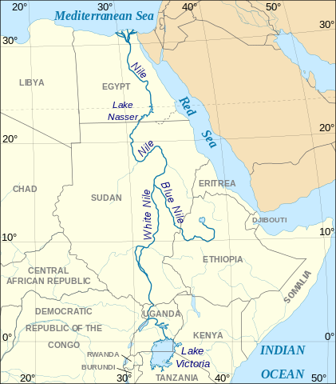
×
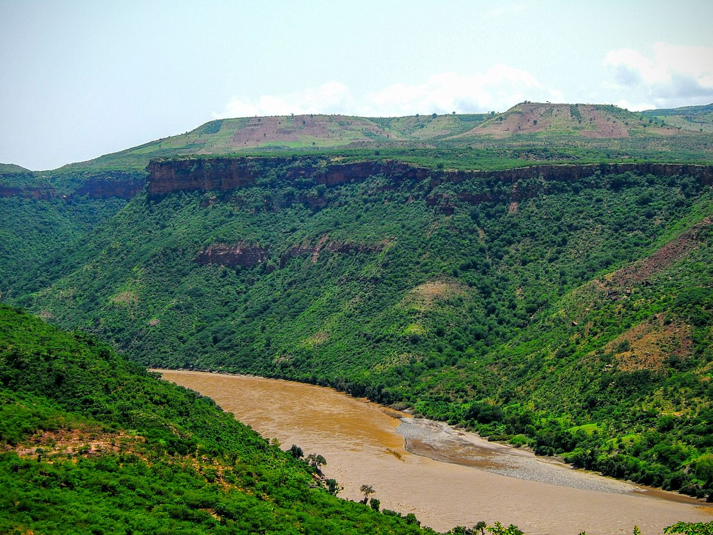
Le Nil Bleu
×
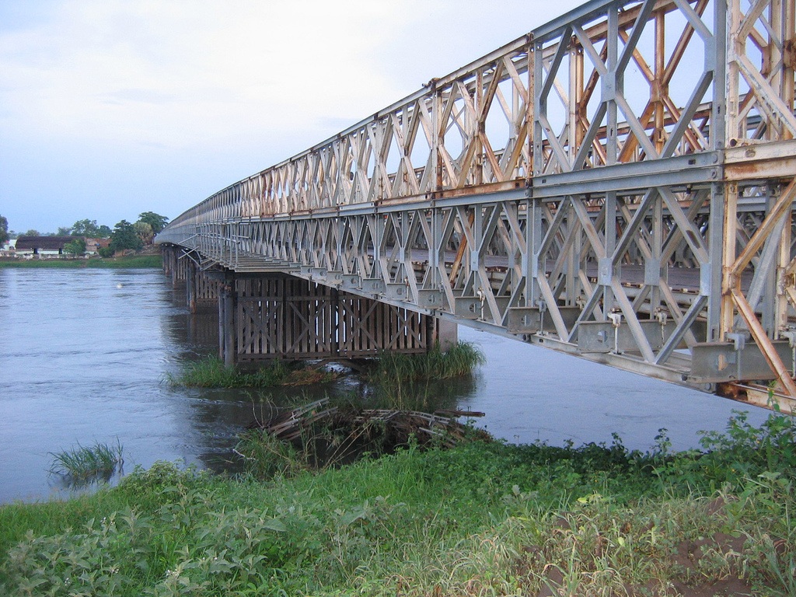
Le Nil Blanc
×
A) Nil Blanc
B) Nil Bleu
Commentaire:
C'est le Nil Bleu qui contribue le plus à la fertilité, car il transporte des argiles et limons issus de roches volcaniques basiques (basaltes) riches en sels minéraux (calcium). Le Nil Blanc transporte surtout des argiles TO (comme la kaolinite), à faible CEC.
3. Quelles sont les conséquences d'un sol trop acide ?
A) Cela augmente l'hydrolyse des minéraux alumino-silicatés, comme les feldspaths et les argiles, ainsi la libération d'alcalins ou alcalino-terreux dans les eaux du sol.
B) L'ion Al
3+
, toxique pour de nombreuses plantes, devient soluble pour des pH en-dessous de 4.
C) Cela booste la productivité microbienne et végétale.
4. Pourquoi les sols sur substrat alumino-silicaté tendent à s'acidifier ?
A) À cause du CO
2
atmosphérique, qui donne un acide faible HCO
3
-
dans les sols.
B) À cause de l'hydrolyse des roches alumino-silicatées.
C) À cause de la libération d'ions H
+
par les plantes.
5. L'activité microbienne ...
A) est plus importante dans les sols neutres et basiques.
B) ne dépend pas significativement du pH.
C) est plus forte dans les sols acides (pH ~ 4)
6. Quelles sont les différentes classifications des sols actuellement disponibles ?
A) La World Reference Base.
B) La Classification des Sols de la CPCS.
C) Le Référentiel Pédologique.
D) La Nouvelle Nomenclature Morpho-Fonctionnelle des Sols.
E) La Soil Taxonomy.
7. Ce sol présente:
un horizon A, organo-minéral, sombre à structure finement grumeleuse.
Un horizon C à structure lithologique (basalte).
Quel est ce sol ?
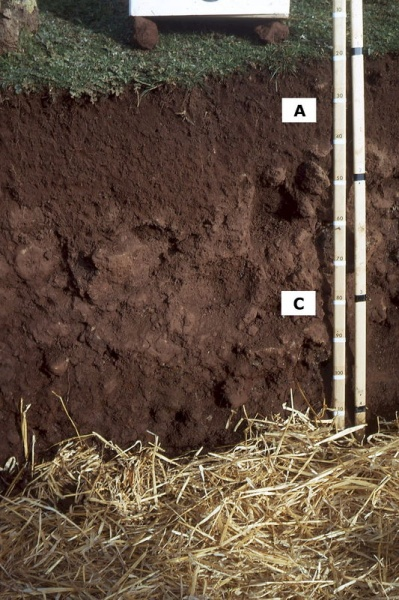
×
A) Un ranker
B) Un andosol
C) Un sol brun
D) Un sol lessivé
8. On considère la réaction d'hydrolyse d'un feldspath, l'anorthite CaAl
2
Si
2
O
8
en Ca
2+
, Si(OH)
4
et Al
2
O
3
. Quelle réaction ci-dessous est bien équilibrée ?
A) CaAl
2
Si
2
O
8
+ 2 H
+
+ 3 H
2
O -> Ca
2+
+ Si(OH)
4
+ Al
2
O
3
B) CaAl
2
Si
2
O
8
+ 2 H
+
+ 2 H
2
O -> Ca
2+
+ 2 Si(OH)
4
+ Al
2
O
3
C) CaAl
2
Si
2
O
8
+ H
+
+ 3 H
2
O -> Ca
2+
+ 2 Si(OH)
4
+ Al
2
O
3
D) CaAl
2
Si
2
O
8
+ 2 H
+
+ 3 H
2
O -> Ca
2+
+ 2 Si(OH)
4
+ Al
2
O
3
9. Pourquoi l'hydrolyse des minéraux alumino-silicatés riches en alcalins et alcalino-terreux diminue l'acidité des sols ?
A) Parce que l'hydrolyse de ces minéraux consomme des H
+
.
B) Parce que l'hydrolyse de ces minéraux produit des H
+
.
C) Parce que les cations alcalins et alcalino-terreux libérés se lient à des H
+
?
D) Parce que les cations alcalins et alcalino-terreux libérés se lient à des OH
-
?
10. Qu'est-ce qu'un allophane ?
A) C'est un silicate d'alumminium hydraté, généralement mal cristallisé, voire amorphe.
B) C'est une amphibole sodique.
C) C'est un oxyde d'aluminium.
D) C'est une variété de feldspath.
11. Qu'est-ce que l'imogolite ?
A) C'est un aluminosilicate hydraté.
B) C'est une variété d'albite.
C) C'est une altérite.
D) C'est une latérite.
12. Comment se présente la structure de l'imogolite ?
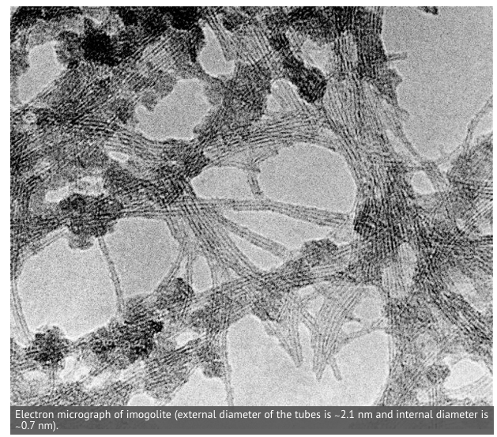
×
A) L'imogolite a une structure tubulaire.
B) L'imogolite a une structure planaire.
C) L'imogolite forme des feuillets comme les argiles.
D) L'imogolite forme des sphères.
13. Quelle est la structure d'un allophane ?
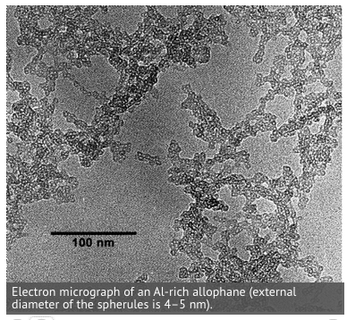
×
A) L'allophane forme des nano-sphères.
B) L'allophane a une structure tubulaire.
C) L'allophane a une structure planaire.
D) L'allophane forme des feuillets comme les argiles.
14. Quelle est la composition chimique type de l'imogolite ?
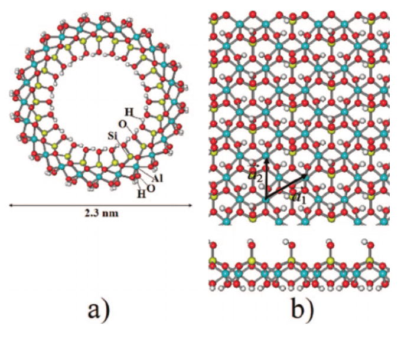
×
A) Al
2
O
3
, SiO
2
B) Al
2
O
3
, Si(OH)
4
C) Al(OH)
2
, Si(OH)
4
D) Al(OH)
3
, Si(OH)
4
15. Dans quel contexte va-t'on trouver des imogolites et allophanes
A) Lors de l'hydrolyse de feldspaths.
B) Lors de l'hydrolyse de gneiss.
C) Lors de l'hydrolyse de roches volcaniques, contenant un verre alumino-silicaté sous climat humide.
D) Lors de l'hydrolyse de roches carbonatés.
16. Que signifie le mot
imogo
en japonais ?
A) "minéral volcanique".
B) "volcan".
C) "sol volcanique".
D) "sol".
17. Qu'est-ce qu'un andosol ?
×
A) C'est un sol qui se développe sur le dos des collines.
B) C'est un sol de couleur foncée, fertile, développé sur des roches volcaniques sous climat humide.
C) C'est un sol caractéristique de la Cordillère des Andes.
D) C'est un sol de région granitique.
18. Ce sol présente
un horizon A, organon-minéral, finement structuré.
un horizon C d'altération (basalte altéré).
Quel est ce sol dans le RP ?
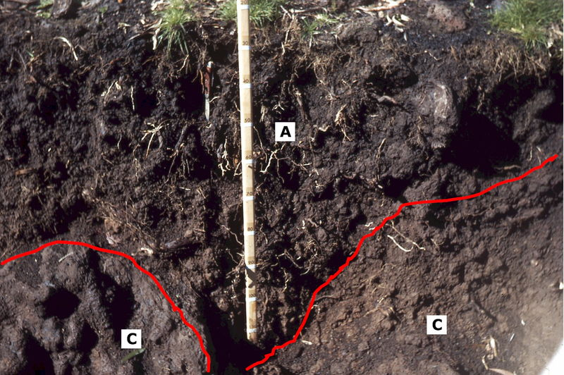
×
A) Une rendzine
B) Un andosol
C) Un ranker
D) Un sol brun
19. A quel composé est dû la couleur orangée vive des composés précipités sur les branches mortes flottant à la surface d'un bassin alimenté par les eaux acides d'une mine abandonnée ?
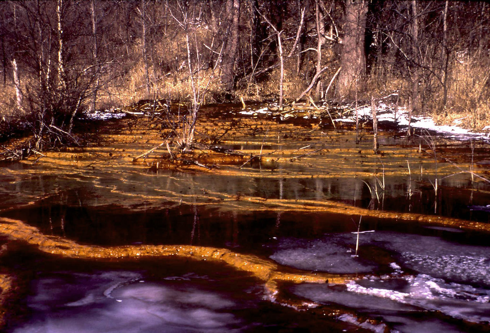
×
A) De la ferrihydrite.
B) De l'hématite.
C) De la magnétite.
D) De la pérovskite.
20. La ferrihydrite est un oxyhydroxyde commun de Fe
3+
. Cependant sa structure cristalline fait encore l'objet de recherches. Pour quelle raison ?
A) Car c'est un minéral instable à la surface de la terre.
B) Car c'est un composé rare.
C) Car c'est un composé formant des nanocristaux.
D) Car c'est un composé contenant souvent des défauts cristallins.
21. L'eau s'écoulant de ce tuyau laisse des précipités de couleur orange vif. Qu'est-ce que cela peut indiquer sur cette eau ?
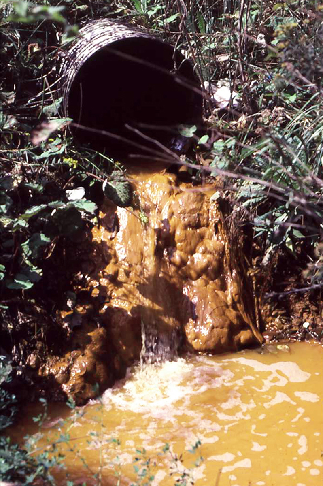
×
A) C'est une eau très peu minéralisée.
B) Cela peut être une eau issue d'une zone minière.
C) C'est une eau laissant des précipités de ferri-hydrites.
D) Cela peut être une eau thermo-minérale.
22. L'hydrolyse des roches volcaniques sous climat humide produit des nanocristaux comme les allophanes, les imogolites ou les ferrihydrites. Quelles propriétés confèrent ces minéraux à ces sols (andosols) ?
A) Une forte capacité de rétention d'eau.
B) Une forte rétention du phosphore.
C) Une faible teneur en carbone organique.
D) Une faible densité apparente.
E) Une forte adsorption de l'humus à ces minéraux colloïdaux.
23. Que signifie
horizon vitrique
dans le cas d'un andosol ?
A) Un horizon d'un sol anthropique, contenant des éclats de verre.
B) Un horizon de sol, dur et fragile comme du verre.
C) Un horizon d'un andosol encore peu évolué et gardant une bonne proportion de verres volcaniques et autres minéraux primaires.
D) Un horizon d'un andosol, de couleur moins foncée.
24. Dans le RP, que signifie la lettre
S
pour un horizon ?
A) L'horizon structural.
B) L'horizon sodique.
C) L'horizon saturé.
D) L'horizon sec.
25. Dans le RP, que signifie la lettre
G
pour un horizon ?
A) L'horizon argileux.
B) L'horizon réductique.
C) L'horizon gelé.
D) L'horizon gélifracté.
26. Qu'est-ce que l'horizon réductique dans le RP ?
A) C'est l'horizon décarbonaté.
B) C'est l'horizon, engorgé d'eau et qui constitue un milieu réducteur.
C) C'est l'horizon très appauvri en alcalins, alcalino-terreux et silice.
D) C'est l'horizon débarassé de ses argiles.
27. Qu'est-ce qui différencie l'horizon réductique de l'horizon rédoxique dans le RP ?
A) L'horizon réductique est un milieu réducteur en permanence, tandis que l'horizon rédoxique connaît des périodes temporaires oxydantes.
B) Aucune, ce sont deux synonymes.
C) L'horizon rédoxique est un milieu plus réducteur que l'horizon réductique.
D) L'horizon réductique connaît des périodes temporaires oxydantes, tandis que l'horizon rédoxique est un milieu réducteur permanent.
28. Que signifie la lettre
g
pour un horizon dans le RP ?
A) C'est l'horizon réductique.
B) C'est l'horizon rédoxique.
C) C'est l'horizon argileux.
D) C'est l'horizon gelé en permanence.
29. Qu'est-ce que l'horizon
BP
dans le RP ?
A) C'est l'horizon B d'accumulation de pelotes fécales.
B) C'est l'horizon B d'accumulation de pierres.
C) C'est l'horizon B d'accumulation dans les podzols, avec accumulation massive d'oxydes de fer et d'aluminium, ainsi que d'humus.
D) C'est l'horizon B d'accumulation de pélites.
30. Qu'est-ce que l'horizon
BT
dans le RP ?
A) C'est l'horizon B d'accumulation d'argiles.
B) C'est l'horizon B d'accumulation d'oxydes de Fe et d'Al.
C) C'est l'horizon B d'accumulation de sesquioxydes.
D) C'est l'horizon B d'accumulation d'humus.
31. Que signifie l'horizon
H
dans le RP ?
A) C'est l'horizon humifère.
B) C'est l'horizon histique.
C) C'est l'horizon holomélanocrate.
D) C'est l'horizon haplique.
32. Qu'est-ce qu'un horizon histique ?
A) C'est un horizon structuré en nid d'abeilles.
B) C'est un horizon constitué de matières organiques, issues de végétaux aquatiques, baignant dans l'eau.
C) C'est un horizon structuré par les racines et le mycélium des champignons.
D) C'est un horizon formé essentiellement de tissus ligneux.
33. Quelle est la différence entre un horizon calcaire
Aca
et un horizon calcique
Aci
dans le RP ?
A)
Aca
se caractérise par des figures de dissolution sur les clastes calcaires, tandis que
Aci
en est exempt.
B)
Aca
est un horizon avec néoformation de modules/encroûtements carbonatés,
Aci
n'en contient pas.
C) Aucune, ce sont des synonymes.
D)
Aca
est carbonaté (effervescence à HCl) tandis que
Aci
est décarbonaté (mais il contient encore du Ca
2+
).
34. Que signifie
Aa
dans le RP ?
A) C'est l'horizon superficiel des sols marécageux.
B) C'est l'horizon superficiel riche en composés azotés.
C) C'est l'horizon allophanique.
D) C'est l'horizon
A
d'accumulation.
35. Que signifie
FE
dans le RP ?
A) C'est l'horizon d'éluviation du fer.
B) C'est l'horizon fibreux et éluvié.
C) C'est l'horizon fersiallitisé.
D) C'est l'horizon ferrique.
36. Que signifie
K
dans le RP ?
A) C'est l'horizon calcarique.
B) C'est l'horizon potassique.
C) C'est l'horizon alcalin.
D) C'est l'horizon riche en potassium.
37. Qu'est-ce qu'un horizon calcarique ?
A) C'est un horizon avec des complexes argilo-humiques saturés en Ca
2+
.
B) C'est un horizon avec des encroûtements calcaires.
C) C'est un horizon avec des cailloux et/ou des pierres calcaires.
D) C'est un horizon d'altération issu d'une roche-mère calcaire.
38. Qu'est-ce que l'horizon
V
dans le RP ?
A) C'est l'horizon vertique.
B) C'est l'horizon issus de dépôts éoliens.
C) C'est l'horizon zéolitisé.
D) C'est l'horizon vitrique.
39. Qu'est-ce qu'un horizon vertique ?
A) C'est un horizon contenant beaucoup d'argiles gonflantes.
B) C'est un horizon pierreux.
C) C'est un horizon contenant des argiles TO.
D) C'est un horizon incliné, car développé sur une pente raide.
40. Qu'est-ce que la fersiallitisation ?
A) C'est de l'allitisation avec développement marqué d'encroûtements ferrugineux.
B) C'est une forme de bisiallitisation accompagnée d'un lessivage total du fer.
C) C'est une forme de bisiallitisation, se développant en climat méditerranéen ou tropical, marquée par l'association des ions Fe
3+
avec les argiles et l'humus.
D) C'est une forme de bisiallitisation se faisant en milieu réducteur.
41. Que signifie l'horizon
FS
dans le RP ?
A) C'est l'horizon constitué de sulfates de fer.
B) C'est l'horizon constitué de ferrosillites.
C) C'est l'horizon fersiallitique.
D) C'est l'horizon constitué de sulfures de fer.
42. Où trouve-t'on en France métropolitaine des sols sur substrat volcanique ?
A) Dans le Massif Armoricain
B) Dans la Sologne
C) Dans les Vosges
D) Dans le Morvan
E) Dans le Massif Central
F) En Picardie
43. Que signifie étymologiquement le mot
andosol
?
A)
An
veut dire "sol" et
Do
veut dire "noir".
B)
An
veut dire "collant" et
Do
veut dire "sol".
C)
An
veut dire "épais" et
Do
veut dire "noir".
D)
An
veut dire "noir" et
Do
veut dire "sol".
44. Qu'est-ce qu'une espèce végétale
héliophile
?
A) C'est une espèce végétale qui a besoin de beaucoup de lumière pour se développer.
B) C'est une espèce végétale qui a la propriété d'orienter ses feuilles vers le soleil.
C) C'est une espèce végétale qui produit des fleurs jaunes comme le soleil.
D) C'est une espèce végétale qui craint les endroits trop lumineux.
45. L'antonyme de
héliophile
est ...
A) sciaphile.
B) ombrophile.
C) sélénophobe.
D) mélanophile.
46. Quelle est l'espèce arborescente qui colonise, en premier, les sols volcaniques de la Chaîne des Puys sur cendres trachytiques ?
×
A) Le bouleau verruqueux
B) Le hêtre
C) Le chêne
D) L'aulne
47. Quel est l'espèce arborescente qui colonise, dans les premiers stades, les sols volcaniques de la Chaîne des Purs sur cendres basaltiques ?
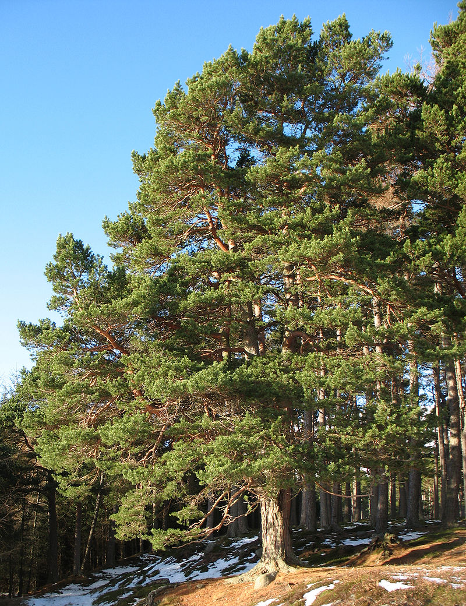
×
A) Le sapin
B) Le chêne
C) Le méléze
D) Le Pin sylvestre
48. Quelle est une des principales différences entre silandosol et aluandosol ?
A) Les aluandosols sont plus acides (pH < 5) que les silandosols (pH >= 4.5).
B) Les silandosols sont plus acides (pH < 5) que les aluandosols (pH >= 4.5).
49. Qu'est l'eau
hygroscopique
?
A) C'est l'eau contenue dans les mésopores.
B) C'est l'eau fortement liée.
C) C'est l'eau contenue dans les micropores.
D) C'est une eau avec une pression de succion supérieure à 15 bars.
E) C'est une eau normalement non accessibles aux plantes.
50. Qu'est-ce que l'eau
capillaire
?
A) C'est une eau faiblement retenue.
B) C'est une eau contenue dans les mésopores.
C) C'est une eau contenue dans les micropores.
D) C'est une eau avec une pression de succion comprise entre 0.3 bar et 15 bars.
E) C'est une eau accessible aux plantes.
51. Qu'est-ce qu'on appelle l'eau
gravitationnelle
ou
gravifique
?
A) C'est une eau très fortement retenue.
B) C'est une eau contenue dans les micropores.
C) C'est une eau avec une pression de succion inférieure à 0.3 bar.
D) C'est une eau contenue dans les macropores.
52. Qu'est-ce que le
RUM
?
A) La Réserve Unifiée de Macro-Nutriments,
B) Le Roulement Universel des Microbes.
C) Le Réservoir Utilisable Maximal,
D) Le Réseau Unifié du Mycélium,
53. Quelle est la définition du Réservoir Utilisable Maximal (RUM) ?
A) C'est la capacité au champs
B) C'est la différence entre la capacité au champs et la quantité retenue au point de flétrissement.
C) C'est la quantité d'eau retenue au point de flétrissement.
D) C'est la somme de la capacité au champs et de la quantité retenue au point de flétrissement.
54. Qu'est-ce qu'on appelle le
point de flétrissement
?
A) C'est l'état hydrique limite du sol, à partir duquel la terre ne retient plus l'eau par capillarité si l'humidité du sol augmente encore.
B) C'est l'état hydrique limite du sol, à partir duquel les plantes standard ne sont plus capables de capter l'eau résiduelle si l'humidité du sol baisse encore.
C) C'est l'état hydrique limite du sol, à partir duquel la terre montre des signes d'assèchement (comme l'apparition de fentes de dessication).
D) C'est l'état hydrique limite du sol, à partir duquel les plantes standard flétrissent si l'engorgement en eau du sol augmente encore.
55. Qu'est-ce qu'on appelle la
capacité au champs
?
A) C'est un état hydrique limite du sol, pour lequel la pression de succion est de 0.3 bar.
B) C'est un état hydrique limite du sol, pour lequel la pression de succion est de 14.2 bar.
C) C'est un état hydrique limite du sol, pour lequel la pression de succion est de 20 bar.
D) C'est un état hydrique limite du sol, pour lequel la pression de succion est de 3 bar.
56. A quoi sert la capacité au champ ?
A) Ce paramètre caractérise la teneur limite en eau du sol entre le domaine de l'eau capillaire et celui de l'eau gravifique.
B) Ce paramètre caractérise la teneur limite en eau du sol entre le domaine de l'eau capillaire et celui de l'eau hygroscopique.
C) Ce paramètre caractérise la teneur limite en eau du sol entre le domaine de l'eau hygroscopique et celui de l'eau gravifique.
57. Quels sont les sols qui présentent les meilleurs RUM ?
A) Les sols pierreux.
B) Les sols sableux.
C) Les sols argileux.
D) Les sols limoneux.
E) Les sols graveleux.
58. Donner un ordre de grandeur de la RUM d'un sol limoneux ?
A) Environ 20-25 cm/m de sol.
B) Environ 5-10 cm/m de sol.
C) Environ 10-15 cm/m de sol.
D) Environ 30-35 cm/m de sol.
59. Donner un ordre de grandeur de la RUM d'un sol sableux ?
A) Environ 20-25 cm/m de sol.
B) Environ 30-35 cm/m de sol.
C) Environ 5-10 cm/m de sol.
D) Environ 10-15 cm/m de sol.
60. Quel type de sols va-t'on trouver sur des scories volcaniques dans une carrière abandonnée depuis une vingtaine d'années ?
A) Un andosol.
B) Un vertisol.
C) Un régosol.
D) Un sol brun.
61. Quelles sont les particularités des andosols au toucher ?
A) Ils forment des grosses mottes de terre.
B) À l'état humide, les mottes éclatent sous la pression des doigts.
C) À l'état sec, les mottes sont pulvérulents, sans cohésion entre elles.
D) Ils ont une structure grumeleuse très fine.
62. Qu'est-ce que la
thixotropie
?
A) C'est la propriété d'un matériau qui se solidifie quand on lui applique une certaine pression.
B) C'est la propriété d'un matériau qui bout quand on lui applique une certaine pression.
C) C'est la propriété d'un matériau qui se dilate quand on lui applique une certaine pression.
D) C'est la propriété d'un matériau qui voit sa viscosité chuter quand on lui applique une certaine pression.
63. Quel pourcentage de surface des terres émergées occcupent les andosols dans le monde ?
A) Environ 5%.
B) Environ 15%.
C) Environ 10%.
D) Environ 1%.
64. Est-ce que les andosols sont généralement des sols fertiles ?
A) Oui.
B) Non.
65. Quel est le stock de matières organiques en moyenne dans un andosol ?
A) Environ 10 kg par m
2
.
B) Environ 1 kg par m
2
.
C) Environ 5 kg par m
2
.
D) Environ 25 kg par m
2
.
66. Quel est ce sol selon le RP ? Le solum comporte :
un horizon rouge ferrallitique (1),
et un horizon d'altération sur gneiss (2).
La coupe fait 2 mètres d'épaisseur.
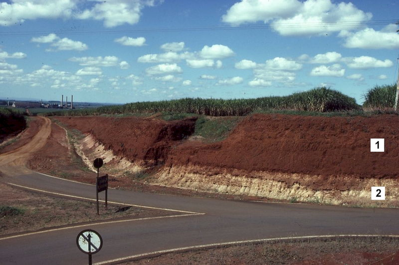
×
A) Un fersialsol.
B) Un ferrallitisol.
C) Un ferruginosol.
D) Un oxydisol.
67. Quelle est la différence entre un ferrallitisol et un oxydisol ?
A) Les oxydisols ne comportent pas de niveaux durcis (cuirasses, carapaces) comme les ferrallitisols.
B) Les ferrallitisols ne comportent pas de niveaux durcis (cuirasses, carapaces) comme les oxydisols.
68. Dans la terminologie utilisée par le RP, que désigne l'horizon
OX
?
A) C'est un horizon riche en oxydes et hydroxydes de Fe
2+
et d'aluminium.
B) C'est un horizon riche en carbonates de fer.
C) C'est un horizon riche en oxydes et hydroxydes de fer et d'aluminium.
D) C'est un horizon riche en sulfates de fer.
Corriger
Recommencer